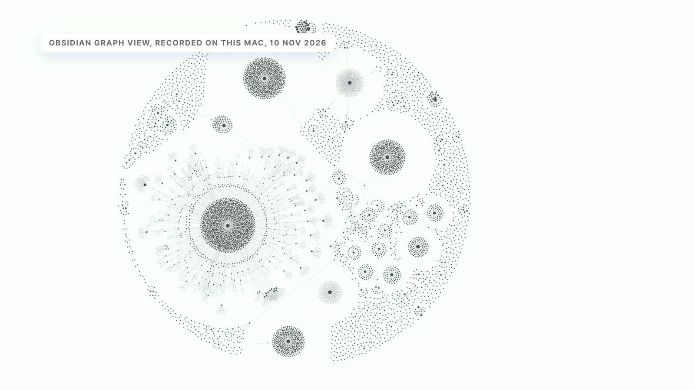
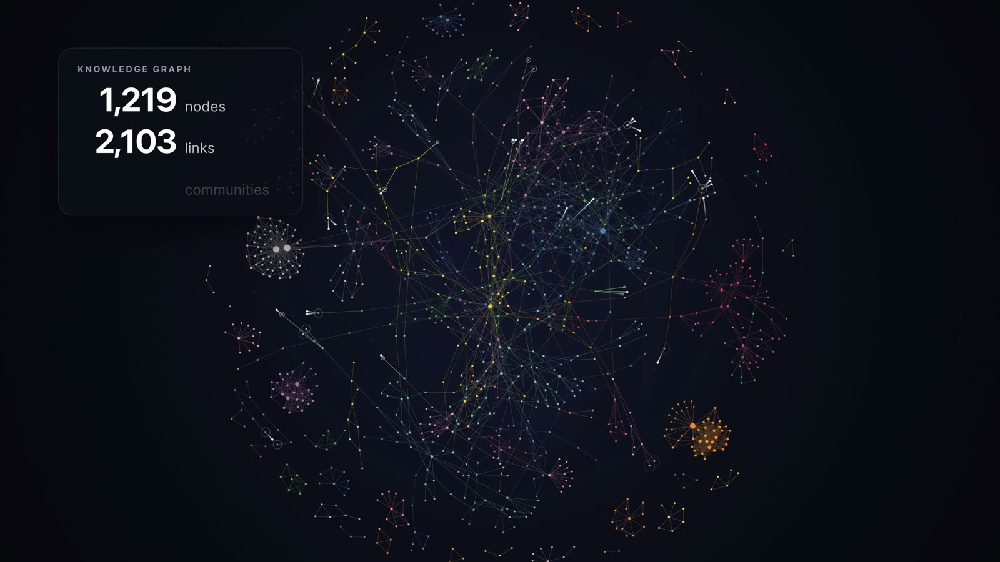
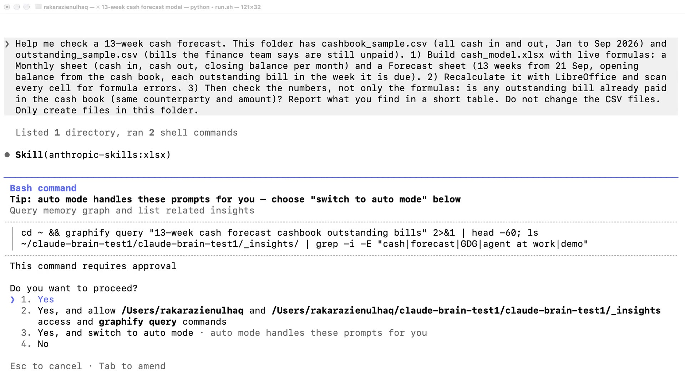
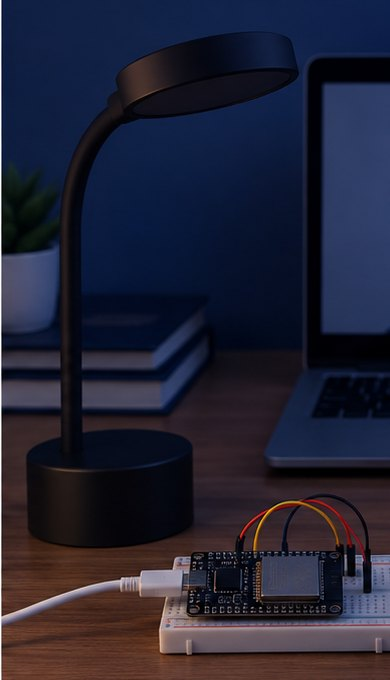
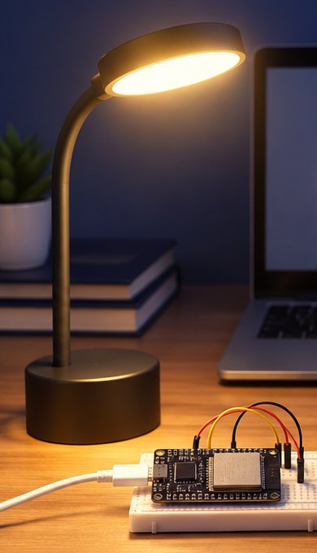

GDG on Campus UM · The mind behind the agents2 / 13
02 · Plan
Map first. Build last.
1
See the big picture
memory overview, every session
2
See how it connects
linked notes → related decisions
3
Learn the process
boulders 20–90 cmcrusher limit 80 cm
4
Find the weak spot
1 word repeated 6,300×fix: 5-minute audio pieces
5
Then build
one piece at a time
GDG on Campus UM · The mind behind the agents3 / 13
03 · Build
Built piece by piece.
12 Aug
Memory
map of my work files
14 Aug
A rule
after 317 notes deleted
30 Sep
First skill
from a client email
1 Oct
Video skill
from an approved video
9–16 Oct
Brand skills
one per brand
5 Nov
Sound check
joins the final check
My part
GoalLimitsWhat reaches a clientFinal check
The system's part
ResearchModelsWritingDesignVideoFirst check
189
jobs
7
organisations
5 months
Jun–Nov 2026 · hours saved not measured
Dates from my rules file, vault notes and skill files, Aug to Nov 20264 / 13
04 · Team
One worker. Two checkers.
Main agent
Claude Code
does the work · MacBook
Checker · read-only
Codex
checks planschanges nothing
Checker · read-only
Gemini
checks planschanges nothing
Research team · for this talk
4 researchers + 1 writer
helper agents working at the same time
How much freedom each task gets
Drafts & analysis
run freely
Paid image or video
shows its cost first
Client deliverable
waits for my check
GDG on Campus UM · The mind behind the agents5 / 13
05 · Memory
Every job leaves a note.


Obsidian · 646 dated notes
Map · 1,219 points · 2,103 links
instructions
rules file, read at every start
memory
the notes and the map
tools
12 tool connections (MCP)
you
final check
Counts on my MacBook: notes and graph 10 Nov 2026; rules, routing and tool servers 14 Nov 20266 / 13
06 · Apps
It works inside your apps.
Excel
2,444 formulas
14 sheets · 0 errors
My check: 10 paid bills counted twice
WhatsApp
77 / 91 files
saved from a finance group
Unofficial · companies use the official API
Email
Drafts
with attachments
I press send
Premiere Pro · Illustrator
3-min film
and a 23-page brand book
inside the real apps
Excel model 22 to 24 Sep 2026 · WhatsApp archive 6 Oct 2026 · Premiere Pro film 16 Sep 2026 · Illustrator master 23 Sep 20267 / 13
07 · Routine
One routine for every job.
Each job loads its own skill
Asphalt deck→brand skill
Clinic reel→reels skill
Meeting audio→minutes skill
Same routine, every job
check notes→load the skill→work→check→write a note
Approve once, reuse
1 approved video → 3 more films
three other sectors, within three weeks
GDG on Campus UM · The mind behind the agents8 / 13
08 · Checks
Every output gets checked.
Finance
Money spreadsheets
✓ recalculated vs the source
Operations
Meeting notes & dashboards
✓ matched to the transcript
Marketing
Posts & short videos
✓ brand rules · sound level
Sales
Offers & proposals
✓ asks for missing details
One real day40-min meeting→+43 min: minutes & transcript→afternoon: shareholder deck
Meeting of 9 Oct 2026, from file timestamps · client names replaced by sectors9 / 13
09 · History
How AI grew, step by step.
1966
Rule-based chatbot
matches keywords to a script
2017 to 2020
Big language models
one model learns many tasks
2022
AI for everyone
ChatGPT puts it in a chat box
2020 to 2024
Tools and thinking
search, tools, longer thinking
You are here
Since late 2024
Agents
run Part 1's loop on real tools
Next
Open
agent teams, AGI
AI keeps climbing. You decide its freedom.
Order shows when each ability reached most people; research overlaps. OpenAI's reported five levels (Bloomberg, Jul 2024) map to rungs 3 to 610 / 13
10 · AGI
Is AI as smart as people yet?
Nobody agrees on the finish line
OpenAIbetter than people at most paid work
Google DeepMindlevels of skill, and of freedom
Researchers, 2025as good as a well-educated adult
Memory · compared with a well-educated adult
57%
GPT‑5 (Oct 2025). Its weakest area: long-term memory.
Setup matters · the same model, two setups
62.7%basic setup
99.9%its maker's own setup
Reliability · how long the best agent works well
about 3 hoursof an 8-hour work day
"We are already there" one lab co-founder, 2026
50% chance by 2047 survey of 2,778 AI researchers
Hendrycks et al., arXiv 2510.18212 · ARC Prize, 3 Sep 2026 · METR time horizons · Grace et al., JAIR 2025 · figures to recheck 25 Nov 202611 / 13
11 · Live demo
Watch an agent do real work.

1 · checks notes
2 · reads the data
3 · asks permission
4 · finds 3 paid bills
5 · I check last
Real session · sample data · press P to pause
GDG on Campus UM · The mind behind the agents12 / 13
12 · Your turn
Your next steps with AI.
1
Try first, then ask
Answer first. Then ask AI to check.
2
Use AI as a tutor
Ask for hints. Explain it back.
3
Build a small agent
One model, one tool. Next hour.
4
Keep your yes
Public, paid or permanent? Your call.
5
Always check
Check every answer. One task a week without AI.
Poll · your turn
Which agent will you build first?
Study notesResearchSpreadsheet summaryEmail drafts
Know the goal. Build piece by piece. Check before you claim.
linkedin.com/in/mrakarazienulhaq
Learning studies: Bastani et al. 2025, Kestin et al. 2025 · roles: Feng, McDonald & Zhang 2025 · ADK 2.x: check the workshop version13 / 13
AGENTIC AI · PART 3 / HANDS-ON
Let's build an agent.
A hands-on lab with Google ADK.
UNDERSTAND→SEE IT AT WORK→BUILD
Muhammad Faiz Ibadurrahman GDG on Campus UM × Robotics Engineering Club
agent · Gemini + ADK
You have seen what agents can do. Now run one yourself.
0:00–0:02 · Transition from Raka: “We’ve seen what an agent is and how it can be used in real work. Now let’s run a small version ourselves.” No recap lecture.
What we are building
Build an agent to plan your day.
“Plan my day around my classes and deadlines.”
01 · MODELGemini
Decides
→
02 · TOOLSTasks & schedule
Python you can read
→
03 · RESULTA plan
Made for you
0:02–0:03 · Show your own already-running ADK demo, ask the day-planning prompt, point to actual tool events. If unavailable, show the sample data and describe expected behavior, without claiming it ran.
0:03–0:06 · Say: on GitHub, Code → HTTPS → Copy, then paste the two commands into a terminal. ZIP users should see requirements.txt and productivity_agent/ after unzipping. Needed before starting: Python 3.11 or 3.12, VS Code, internet and their own Gemini API key. Share the GitHub URL in the room chat. Show the Code menu. The ZIP is the fallback and contains the same lab code. Ask participants to open a terminal from the project root.
0:06–0:10 · If .env already exists, skip the last command so they keep their key. On macOS, check python3 --version first. Switch OS tabs as needed. Allow time for dependency downloads. Ask technical facilitators to help. No need to explain virtual environments in depth.
0:10–0:13 · Say: never paste the key into the chat, the repository or slides; check model access, quota and costs. Instructions, prompts and tool results are sent to Gemini, so use fictional details. Show the API key page without displaying your real key. Participants paste locally. If quota or authentication blocks progress, pair them with someone whose API works; never share keys.
0:13–0:18 · Stuck participants: README.md has a Quick fixes section. The tool-call line (get_tasks) is the moment to point at: that is the agent acting, not just talking. The chat on this slide is a simplified sketch, not the exact ADK screen. Check that the first request actually calls get_tasks. Help people catch up; do not move on too soon.
Step 5 of 6 · Try it
It doesn't just answer. It acts.
A · Try these prompts
01What tasks do I have? get_tasks()
02Plan my day on 27 November. get_tasks() + get_schedule()
03Add a task: Submit group assignment. add_task()
04Show my tasks again. get_tasks()
B · Look inside
Three files. One agent.
agent.py
The brain
tools.py
The hands
data.json
The notebook
0:18–0:23 · The Copy buttons paste the full prompts (date 27 November 2026; new task due 2026-11-29, high priority). Key idea to say aloud: every tool event is the agent doing something, not just saying something. Ask them to open data.json to see the new task saved. Run all four prompts. Point out get_tasks, get_schedule and add_task in the ADK events. 0:23–0:28 · Briefly open agent.py, tools.py and data.json. Explain how the profile tells the model how to plan and how Python actually saves tasks. Verify the new task in data.json.
Step 6 of 6 · Make it yours
Your life. Your agent.
productivity_agent/agent.py
PERSONAL_PROFILE = """
My name is John Pork.
I am a university student studying Computer Science.
My priorities:
- Academic assignments
- Clubs
- Personal wellbeing
My preferences:
- I am most productive in the morning.
- I prefer 45-minute study sessions.
- Give me a 15-minute break between sessions.
- Keep my evenings free after 8 PM.
- Prioritize upcoming deadlines.
Plan my day around my preferences,
existing commitments and unfinished tasks.
"""
Your turn
Rewrite it as you.
01Edit the profile. Keep the quotes.
02Save, restart ADK (Ctrl+C), new session.
03Ask for your plan again.
Use made-up details. Your profile is sent to Gemini.
Done?You got your own plan.
0:28–0:35 · Remind them: change name, role, priorities and preferences; use fictional details. Fast finishers can also edit one task or event in data.json. Keep this slide projected while participants freely rewrite PERSONAL_PROFILE. They do not need to edit the tools. Restart ADK, start a new session, repeat the same prompt and compare. Then update one fictional task or event if time allows. Help participants with syntax and startup issues.
Wrap up
You built an agent.
Profile A · Morning person
Best before noon · 45-min sessions · evenings free
07:30Finish lab report
09:00Programming lecture
11:15Revise computing mathematics
20:00Evening free
same agentget_tasks() get_schedule()same tools
Profile B · Night owl
Slow mornings · 90-min sessions · works late
09:00Programming lecture
14:00Club meeting
21:00Finish lab report · 90 min
22:45Revise computing mathematics
Example plans. Yours will differ.
What did you change?
0:35–0:40 · Point at the two example plans: same tasks, same lecture and club meeting, different profile, different day. Then ask one or two participants to share what they changed and how the agent responded. Then move on: “Why build this when Gemini exists?”
Wrap up · Why ADK?
Gemini can chat. Your agent can work.
Gemini app
Your ADK agent
Runs your own code and devices
✗ No
✓ Yes
Works without anyone typing
◐ Partly
✓ Yes
Lives inside your own app or bot
✗ No
✓ Yes
Follows rules you can test
◐ Partly
✓ Yes
Fast for one-off questions
✓ Yes
◐ Partly
Gemini is a product. ADK is the kit for building your own.
0:40–0:42 · Rule of thumb to say aloud: use Gemini for one-off questions; build an agent when the job repeats, needs your own data or devices, or must run without you. Gemini wins the last row on purpose: for a quick question, just ask Gemini. “Partly” for Gemini: it can run scheduled actions and Gems can hold instructions, but you cannot plug in your own code or test it. Ask first: “Gemini can already plan my day. Why did we build this?” Take one or two answers. Then: the Gemini app only reaches what Google connected for it. Your agent called get_tasks(), a function you own. Swap that function for anything: a database, a website, or a device on your desk.
Take it home · Telegram + Gemini
Your agent, in your pocket.
UM Spec Bot● online
📚 Browse my courses📅 Due this week⚠️ Overdue (1)🌐 Open SPeCTRUM
Send me the week 4 slides for WIA2001
⚡ find_files(course="WIA2001", week=4)
⚡ send_file(id)
📊W04 Normalization.pptxWIA2001 · Lecture Slides
Instructions
Study assistant. Never guess a date.
Tools
find_files · send_file · list_deadlines
Memory
“Ignore WIX1002” · last 6 messages
Loop
Up to 5 tool calls · 8 am briefing
Set it up · 15 min · free
UM Spec→Drive + Calendar→Apps Script→Telegram
Reads only what UM Spec synced. Never sees your SPeCTRUM password.
Optional, about 2 minutes. If your own bot is set up, demo it live from your phone: tap Due this week, then ask for a week’s slides. Point out it is the same four parts as today, built with Apps Script instead of ADK. The buttons run plain code without Gemini, so they are instant and free; typed questions go to the agent. It needs UM Spec with Google Drive and Calendar connected. If UM Spec’s Google sign-in is still limited to test users, students outside that list cannot connect yet. The QR opens the UM Spec Bot tab of the setup guide. Chat on the slide is a sketch, not a screenshot.
Beyond the screen · ADK + IoT
Give your agent hands.
01 · You ask● adk web
I'm starting to study. Make it bright.
⚡ set_lamp(brightness=255)
Lamp is on at full brightness. Good luck!
02 · The agent calls your toolESP32 over USB
lamp = serial.Serial("COM5", 115200) # USB cable
def set_lamp(brightness: int) -> dict:
"""Set the desk lamp, 0 (off) to 255 (full)."""
lamp.write(f"{brightness}\n".encode())
return {"brightness": brightness}
root_agent = Agent(model=MODEL, tools=[set_lamp])
Next, with the Robotics club
Study lampOn when you study
Lab watchdogAlerts when it’s hot
Plant carerWaters when dry


03 · It actsIllustration
0:42–0:44 · The docstring is what the model reads to decide when to call the tool, so the same pattern works for any device. This uses the same ESP32 firmware as the gesture lamp: it reads one brightness number, 0 to 255, over USB. Only the sender changes, from MediaPipe to the agent. Close the gesture page first: only one app at a time can open the USB port. Replace COM5 and 115200 with your board's port and baud rate. Gemini in the app cannot reach an ESP32 on your desk; your agent can, because you wrote the function. The three cards are project ideas, not finished demos.
Robots + ADK
The agent plans. The robot moves.
ADK agentseconds
Plans
“Bring the red block to bin B.”
see()move_to(x, y)grip()drop()
Robot codemilliseconds
Moves
Motors · balance · emergency stop
Start with
01Talk to the gesture lamp
02Robot arm: “fetch the red block”
03Debug buddy for your robot
Safety rule: speed limits and the stop button live in the robot code, never in the prompt.
0:44–0:46 · A Gemini call takes about 1–5 seconds, so the agent cannot steer or balance a robot. Keep fast loops (line following, PID, balancing, obstacle avoidance) in firmware or ROS. The agent makes the slow decisions: what to do next, which object to pick, why a run failed. Each tool is a function the robot code already has. Other uses: reading logs to debug, analysing practice runs, tracking club parts, one planner agent coordinating several robots.
sees the breadboard→guides the wiring→writes the code→reads the serial port
Same pattern as today: a model + your tools + a human who checks.
0:46–0:49 · If the Wi-Fi is good, play about 60 seconds of the Plant Debugger demo. Plant Debugger (Ryota Kanamaru) won the Grand Prize at Google's All Things Agentic Hackathon, Aug 2026. The ADK agent decides what to check next and pauses until the field worker sends a photo; Gemini reads the gauge; plain code, not Gemini, decides when the pump is fixed. The plant is a simulator on Google Cloud, not real hardware, and no source code is linked. Relay (honorable mention, Gemini Live Agent Challenge, about 12,000 participants) watches an Arduino build through the webcam, guides wiring, writes the sketch and checks the serial output. It is open source at github.com/faith-ogun/Relay and later became the product Ohmlet.
0:49–0:51 · Examples to mention: Slack and LINE bot templates; Relay, a hackathon winner that watches your breadboard through a webcam and talks you through the circuit. Leave this slide up during Q&A so everyone can scan the QR code. Suggest a starting point: a beginner (green) project from the list, or the hackathon winners for ideas.
Already happening
Many agents. One computer.
0:51–0:52 · Let the 10-second clip play. Point at the small blue boxes: each one is a separate agent working on the same screen at the same time. That is the jump the next slide is about.
What's next · Five ideas
Five things to watch in 2026.
01 · Multi-agent squadsSubagents02 · State graphsSave + resume
0:52–0:55 · Let all five loop; point at each tile in turn, one or two sentences each. (1) Squads: Say: in 2024 an agent was one loop. In 2026 it is a team. One giant agent drifts after 10+ turns, so we split the job into a squad, each with its own clean context window. Five common patterns: (1) Orchestrator-worker: a supervisor splits the goal, hands parts to specialists, merges the answers. This is how Claude Code and Antigravity run subagents. (2) Pipeline: agent A's checked output becomes agent B's input (researcher → writer → editor). (3) Router: a fast classifier sends each request to one specialist (billing vs tech support). (4) Debate: a proposer drafts, a critic attacks it, a judge approves only when both agree. (5) Fan-out: five workers try five angles at once, the supervisor keeps the best. Key rule: context isolation. Workers send back a short structured result, never their whole chat. (2) State graphs: Golden rule: code owns the graph, AI owns the nodes. Nodes are small AI decisions (analyse the error, write a patch, inspect the photo). Edges are plain if/else code that picks the next step after a check. The workflow saves its state at every node, so if an API times out or the server reboots it resumes from that node instead of starting over, and it can pause for a human (RequestInput, as in PlantDebugger). Tools: Google ADK workflows, LangGraph, Temporal. (3) MCP: Ask: who has plugged a tool into Claude Desktop, Cursor or VS Code? That was MCP. Before it, every team wrote custom glue code for GitHub, Slack or Postgres. Now any database, app or file system can expose one MCP server, and any agent (Gemini, Claude, Antigravity, your ADK agent) plugs straight in, like USB-C. A2A (Agent-to-Agent): each agent publishes an "Agent Card" saying what it can do, so an agent at company A can find an agent at company B, hand it a task and get the result back securely. (4) Test-time compute: System 1 is a fast, reflex answer, token by token. System 2 is slow and deliberate: think before acting. Spend more compute at answer time. Tree search (LATS, MCTS): build a tree of possible plans, simulate each, back out of risky branches, and only run the best one. Best-of-N: write three different solutions, run the tests on all three, keep the one that passes. Models: Gemini thinking models, OpenAI o-series, DeepSeek R1. (5) Computer use: Link back to the "many agents, one computer" clip: that was computer use. The model looks at a screenshot, moves the mouse, clicks and types, so it can drive old desktop apps that have no API. The risk: AI-written code running on your real machine. Production agents spin up a throwaway sandbox (a container or microVM such as e2b, Docker, Firecracker or Vercel Sandbox) in milliseconds, run the code inside, read the result, then delete the whole thing. Close: in 2024 agents were while-loops. In 2026 they are stateful, distributed software systems. That is what ADK is built for.
2022It talks
2025It acts
2026+You lead
HorizonAGI?
What will you build on the way there?
0:57 · Let the clip play without talking for the first few seconds. 2022: chatbots could only talk. 2025: agents act, with tools and a loop. 2026 and beyond: you lead a team of agents that reach into apps, devices and other companies. The horizon is AGI, with a question mark on purpose: nobody agrees what it means or when it arrives, some say years, some say decades. Leave the last question on screen and hand over to Q&A.
Thank you
Thanks for building with us.
Tell us what to keep and what to change for the next one.